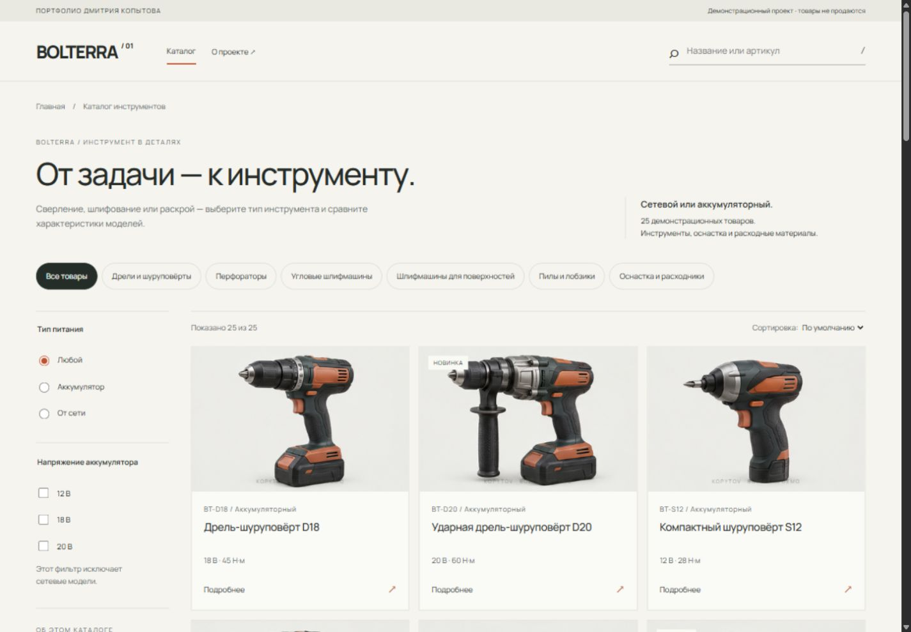
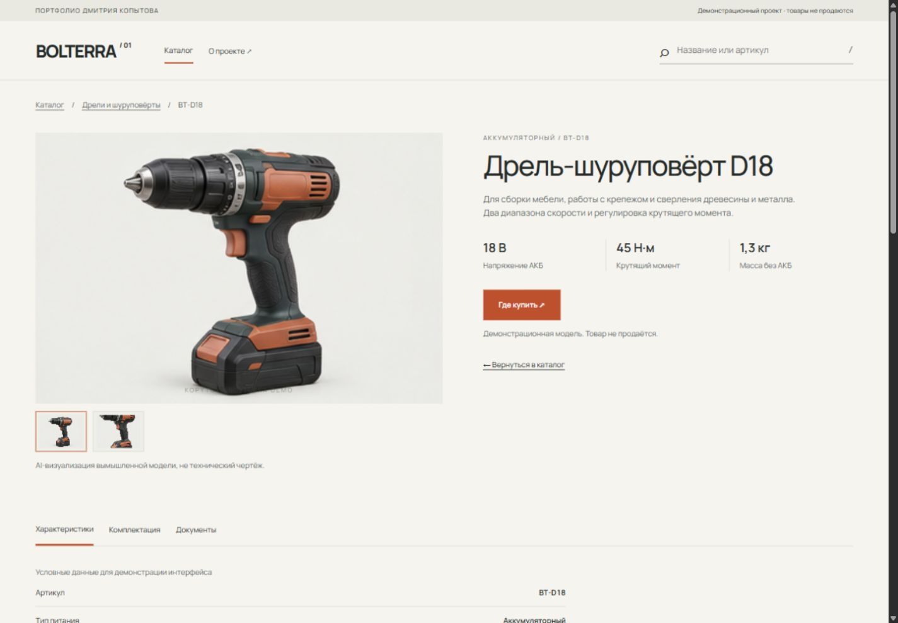
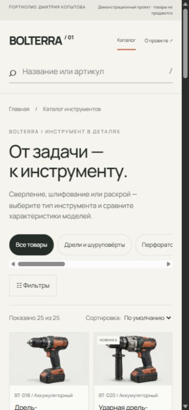

Разные данные — разные карточки.
Для сетевых моделей — мощность, для аккумуляторных — напряжение. Для оснастки — размеры, тип крепления и комплектация.
ВЕБ-ДИЗАЙН / ИНТЕРФЕЙС КАТАЛОГА / 2026
Каталог вымышленного бренда BOLTERRA: от выбора категории до подробной карточки и связанной оснастки.
Открыть рабочий каталог ↗
ЗАДАЧА
Разработать каталог инструмента без корзины и оформления заказа. Показать различия между моделями, организовать технические данные и связать инструмент с оснасткой по назначению.
Для сетевых моделей — мощность, для аккумуляторных — напряжение. Для оснастки — размеры, тип крепления и комплектация.
Поиск, категория и параметры сужают один список. Пустая выдача предлагает сброс. В разделе оснастки электрические фильтры скрыты.
Из инструмента можно перейти к битам, бурам или пилкам, затем вернуться к связанным моделям. Подборки отмечены как демонстрационные.

АДАПТИВНОСТЬ
На телефоне фильтры раскрываются отдельным блоком, категории прокручиваются горизонтально, карточки сохраняют название и ключевые параметры.
Проверены ширины 1440, 768 и 390 px. Навигация доступна с клавиатуры; предусмотрены видимый фокус и уменьшение анимаций.
Посмотреть карточку товара ↗
Это самостоятельная демонстрационная работа, не коммерческий заказ. Названия моделей и характеристики условные, изображения созданы с помощью AI. Покупки и сбор заявок недоступны. Рабочее название бренда не проверялось на регистрацию товарных знаков.
Кейс показывает дизайн и работу прототипа. Исследования пользователей, продажи и бизнес-результаты не заявляются.
Перейти в каталог ↗